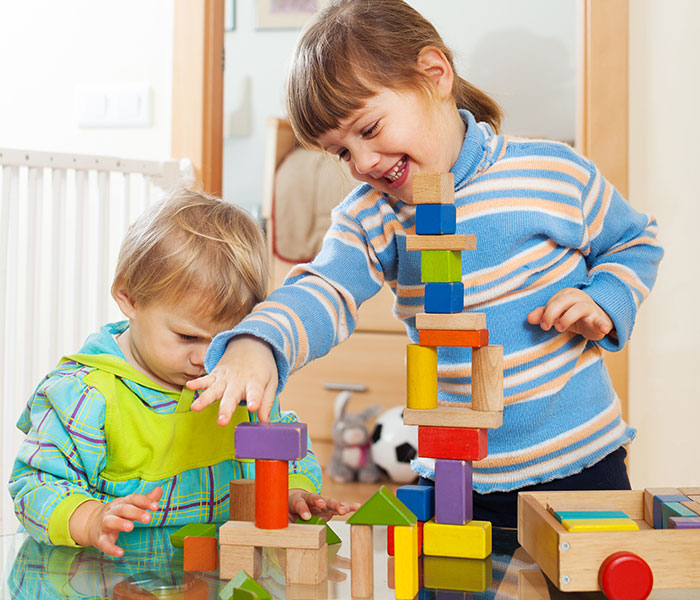

Van Schaikweg 94
Emmen
Emmen
0591 853100

Over Ons
Leren voor Jezelf
Het is voor ons belangrijk dat het kind met plezier en eigen doelen naar school gaat. Om dit te kunnen bereiken werken wij projectmatig, opbrengstgericht en via het Gip-model.Intresieke motivatie en nieuwsgierigheid leidt tot effectief onderwijs en uiteindelijk weer tot eigenaarschap. Dit zijn onze kernwaarden.
Het team
Dit zijn wij!
Ons team kent acht verschillende leerkrachten, een directrice, een IB'er en een specialist.

Harma Vree

Lesley Ankone
Christa van der Laan
Rafaella Kuperus

David Beekman
Anouk Kwakkel

Bram Jongman
Demi Berends

Onderwijsconcept
Daltononderwijs
Kenmerkend voor het Dalton onderwijs is dat het kind veel eigen keuzes mag maken. Wat leer ik en in welke volgorde doe ik dit? Dit draagt bij aan het eigenaarschap van het kind.De leerkracht begeleidt het kind met het plannen van de doelen en taken en het maken van keuzes. Langzamerhand zal het kind steeds zelfstandiger worden.De vijf kernwaarden van het daltononderwijs zijn: samenwerken, vrijheid en verantwoordelijkheid, effectiviteit, zelfstandigheid en reflectie.

Onderwijsconcept
Godsdienst- en Levensovertuiging
Onze school is een school met een algemeen bijzondere grondslag. Het is een school waar iedereen zich thuisvoelt. Er wordt geleerd om met anderen samen te leven en een ander zijn (geloofs)overtuigingen te accepteren. Zo hopen wij het kind zo goed mogelijk voor te bereiden op onze samenleving.We willen dat het kind een eigen visie ontwikkelt waarin het kind anderen accepteert en omarmt. Uiteindelijk willen we allemaal met elkaar samen kunnen leven.Zo zal het kind uiteindelijk ook ontdekken wie hij is, wie hij wil zijn en welke plek hij heeft in de samenleving. Dit betekent dan ook dat iedereen welkom is op onze school. Wederzijds respect is van groots belang en iedereen is gelijkwaardig. Dit komt terug in de dagelijkse interactie in de klas. De kinderen zullen kennis opdoen over verschillende religies en levensbeschouwingen waarvoor een specifieke vakmethode is gekozen. Dit vindt plaats in de dagopening waarin de leerkracht een voorbeeldfunctie heeft. Naast de methode, welke een vaste plek heeft in het rooster, worden er verdiepende HVO/GVO lessen aangeboden door een specialist. Kinderen kunnen gebruik maken van de stilteplek in ons schoolgebouw om bijvoorbeeld te bidden. De christelijke traditionele feestdagen zullen bij ons op school gevierd worden.